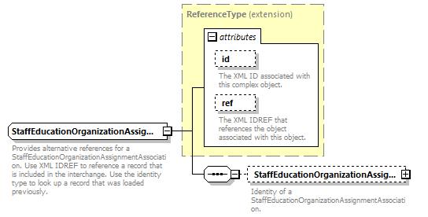
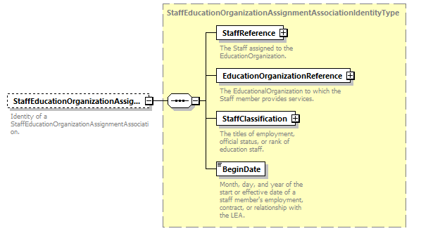

complexType
StaffEducationOrganizationAssignmentAssociationReferenceType
element StaffEducationOrganizationAssignmentAssociationReferenceType/StaffEducationOrganizationAssignmentAssociationIdentity
| diagram |  | ||||||||||||||||||||||
| namespace | http://ed-fi.org/0210 | ||||||||||||||||||||||
| type | extension of ReferenceType | ||||||||||||||||||||||
| properties |
|
||||||||||||||||||||||
| children | StaffEducationOrganizationAssignmentAssociationIdentity | ||||||||||||||||||||||
| attributes |
|
||||||||||||||||||||||
| annotation |
|
||||||||||||||||||||||
| source | <xs:complexType name="StaffEducationOrganizationAssignmentAssociationReferenceType"> <xs:annotation> <xs:documentation>Provides alternative references for a StaffEducationOrganizationAssignmentAssociation. Use XML IDREF to reference a record that is included in the interchange. Use the identity type to look up a record that was loaded previously.</xs:documentation> <xs:appinfo> <ann:TypeGroup>Extended Reference</ann:TypeGroup> </xs:appinfo> </xs:annotation> <xs:complexContent> <xs:extension base="ReferenceType"> <xs:sequence> <xs:element name="StaffEducationOrganizationAssignmentAssociationIdentity" type="StaffEducationOrganizationAssignmentAssociationIdentityType" minOccurs="0"> <xs:annotation> <xs:documentation>Identity of a StaffEducationOrganizationAssignmentAssociation.</xs:documentation> </xs:annotation> </xs:element> </xs:sequence> </xs:extension> </xs:complexContent> </xs:complexType> |
element StaffEducationOrganizationAssignmentAssociationReferenceType/StaffEducationOrganizationAssignmentAssociationIdentity
| diagram |  | ||||||
| namespace | http://ed-fi.org/0210 | ||||||
| type | StaffEducationOrganizationAssignmentAssociationIdentityType | ||||||
| properties |
|
||||||
| children | StaffReference EducationOrganizationReference StaffClassification BeginDate | ||||||
| annotation |
|
||||||
| source | <xs:element name="StaffEducationOrganizationAssignmentAssociationIdentity" type="StaffEducationOrganizationAssignmentAssociationIdentityType" minOccurs="0"> <xs:annotation> <xs:documentation>Identity of a StaffEducationOrganizationAssignmentAssociation.</xs:documentation> </xs:annotation> </xs:element> |